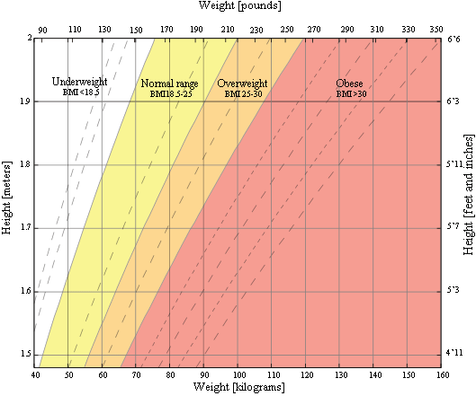

Ideal body weight is everyone's dream. Not only does it have a body shape that supports your appearance, ideal body weight also indicates a healthy body condition. How about you? Let's calculate now on the BMI Calculator.
This calculator should only be used by adults, pregnant or breastfeeding women should not rely on this BMI calculation, and no action should be taken based on the results of this calculation before first consulting a competent person in this matter such as a doctor.
This calculator will give you an idea of how your weight compares to the general values. Body Mass Index (BMI) is a numerical value derived from an individual's weight and height (BMI = weight (kg) / height² (m²)).
This is a graph of BMI categories based on the World Health Organization data. The dashed lines represent subdivisions within a major categorization.
